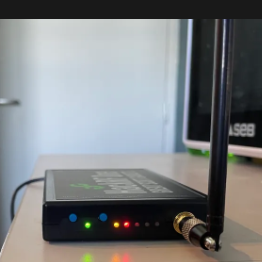

c4tz
c4tz
HackRF and SDR Experiments
This project documents a practical introduction to software-defined radio (SDR) with a HackRF One. The objective is to understand the complete signal path: hardware setup, spectrum observation, IQ recording, signal processing, and protocol-oriented analysis.
Project scope
- Verify the HackRF installation and Windows USB driver.
- Visualize RF activity with an FFT spectrum and waterfall display.
- Record and inspect complex IQ samples.
- Explore Wi-Fi activity, weather-satellite signals, and BLE advertising channels.
- Build small Python tools for repeatable capture and analysis.
Responsible-use note
Use the equipment only on signals and frequencies that you are authorized to observe. This page focuses on passive measurement, spectrum visualization, and analysis of test captures. Do not intercept, decode, replay, or interfere with private communications or protected services.
1. SDR fundamentals
A software-defined radio moves part of the radio chain into software. The antenna receives an RF signal; the HackRF tunes to a center frequency, digitizes the signal, and sends complex samples to the computer. The software then displays or processes those samples.
Typical signal chain
- Antenna and RF front end
- Frequency tuning
- Analog filtering and gain
- ADC conversion
- Complex I/Q sample stream
- FFT, waterfall, demodulation, or protocol analysis
Key parameters
- Center frequency: the frequency around which the receiver is tuned.
- Sample rate: the number of I/Q samples captured per second.
- Bandwidth: the frequency span represented by the capture.
- Gain: amplification applied before or during processing.
- Noise floor: the background energy visible when no dominant signal is present.
I/Q means in-phase and quadrature. Instead of storing only signal amplitude, the receiver stores two synchronized streams that preserve amplitude and phase information. This makes it possible to shift, filter, demodulate, and analyze a signal after recording it.
Practical rule: choose a sample rate wide enough to contain the signal of interest, but avoid unnecessarily wide captures. A wider rate increases CPU usage, storage requirements, and the amount of unrelated RF activity in the recording.
2. Hardware and driver setup
When connecting the HackRF One, verify that the device powers correctly and that the USB status LED is active. The exact LED configuration can vary with firmware and hardware state, but the USB connection should be stable before launching an SDR application.

If the device is recognized correctly, the USB LED should be green as shown in the photograph. If the device is not detected, check the USB cable, avoid unpowered hubs, and verify the driver before changing SDR application settings.
Install the WinUSB driver with Zadig

https://zadig.akeo.ie/
- Select Options → List All Devices.
- Choose HackRF One.
- Select the WinUSB driver.
- Click Install Driver or Replace Driver.
- Restart SDR++ with administrator privileges if Windows still reports an access problem.
The driver must be installed for the correct device. Selecting a different USB device in Zadig can make that device unavailable to its normal Windows driver, so check the displayed device name before applying changes.
Files and software
- sdrpp_windows_x64.zip — SDR++ for Windows
- HackRF releases — official utilities and firmware packages
3. SDR++: spectrum inspection and gain control

SDR++ provides the main observation interface: a spectrum view, a waterfall, tuning controls, demodulation options, and hardware gain controls. The spectrum shows signal energy by frequency; the waterfall shows how that energy changes over time.
Understanding the waterfall
- A horizontal axis represents frequency around the tuned center frequency.
- A vertical axis represents time.
- Color intensity represents received power or relative signal strength.
- Persistent lines usually indicate continuous or regularly repeated transmissions.
- Short bursts appear as brief traces and may correspond to packet-based protocols.
For a weak signal, increase the LNA (Low Noise Amplifier) carefully. More gain can improve visibility, but excessive gain raises the noise floor and may overload the receiver. Stop increasing gain when the signal becomes readable or when the noise floor begins to dominate.


Adjust LNA gain and VGA gain incrementally rather than setting both to maximum. A useful workflow is to begin with low gain, observe the noise floor, increase one control at a time, and compare the result with the antenna disconnected or terminated where appropriate.
Gain troubleshooting
- Flat or weak display: verify the antenna, frequency, sample rate, and device connection.
- Overloaded display: reduce gain; strong nearby transmitters can mask weaker signals.
- Many unexplained peaks: move away from USB noise, displays, switching power supplies, and computers.
- Unstable waterfall: reduce CPU load, narrow the bandwidth, or check the USB connection.
For local radio references near Lille and elsewhere in France, consult a frequency directory such as frequence-radio.org and select the relevant department. Treat directory data as a starting point, then confirm activity directly in the spectrum display.
This is a straightforward software-and-SDR workflow. Avoid switching the HackRF into DFU
mode unless a firmware-recovery or update procedure specifically requires it. The supplied
hackrf_info utility can help confirm device detection and firmware information.
4. URH and packet-oriented analysis

Universal Radio Hacker (URH) can be used to inspect recorded signals at the packet level. The workflow is generally: record a short IQ sample, identify repeated bursts, estimate modulation and timing, demodulate the signal, and inspect the resulting bitstream.
The example capture focuses on the 2.412 GHz region. The purpose is observation and protocol analysis of authorized test data, not transmission or replay.
5. 2.4 GHz Wi-Fi spectrum observation

- Regular peaks can indicate recurring Wi-Fi activity.
- Persistent, relatively strong bursts may correspond to access-point beacons.
- Denser activity is common during streaming, downloads, or active browsing.
- In the 2.4 GHz band, overlapping channel activity can make the waterfall appear wider than a single network.
Example interpretation
- Persistent yellow traces indicate stable emissions.
- Numerous white peaks may indicate short-lived interference, including non-Wi-Fi sources.
The same approach can be applied to the 5 GHz range when the hardware, antenna, and software configuration support it. Spectrum observation alone does not identify a network or reveal its contents; it only shows RF energy and its time/frequency behavior.
6. Weather satellites: NOAA and WX

Weather-satellite reception is time-dependent: the receiver must be configured before the satellite pass, and the antenna must have a sufficiently clear view of the sky. NOAA APT experiments are commonly performed around the 137 MHz region, subject to the satellite, local conditions, and applicable regulations.
Typical processing chain
- Determine the pass time and expected downlink frequency.
- Tune SDR++ before the pass begins.
- Record a clean baseband or audio signal during the pass.
- Demodulate and inspect the recording.
- Process the result with
WXtoImgor another compatible decoder.
A HackRF only receives useful data while the satellite is transmitting and within reception range. Signal quality depends on antenna placement, local noise, horizon obstructions, Doppler shift, and the duration of the pass.
7. Bluetooth Low Energy (BLE)
BLE uses 40 channels with 2 MHz spacing across the 2.4 GHz ISM band, from 2402 to 2480 MHz. Advertising packets use three dedicated channels: channel 37 at 2402 MHz, channel 38 at 2426 MHz, and channel 39 at 2480 MHz.
In the visualization, red indicates detected activity and blue indicates received BLE-related signals. These colors are display conventions; they do not by themselves prove that a complete packet was decoded.


BLE analysis pipeline
A raw capture is not yet a decoded BLE packet. A basic analysis pipeline must account for frequency offset,
filtering, demodulation, symbol timing, bit ordering, whitening, and packet validation. The BLE advertising
Access Address 0x8E89BED6 is a useful synchronization marker when searching for advertising packets.
- Reads
capture_channel_37.raw,38.raw, and39.raw. - Converts IQ samples into a signal representation and candidate bits.
- Searches for the BLE advertising Access Address
0x8E89BED6.
- Captures advertising channels 37, 38, and 39.
- Generates a per-channel spectrogram.
- Saves raw captures and diagnostic images.
Analyzes BLE activity from .raw files and searches for the advertising Access Address.
What a decoder still needs to verify
- Correct center frequency and sample-rate assumptions.
- Stable symbol timing and a valid GFSK demodulation step.
- Correct BLE bit order and whitening configuration.
- Packet length, CRC, and channel consistency.
- Reproducibility across multiple captures rather than a single apparent match.
Capture size warning: a one-minute recording can be very large and slow to process.
With interleaved 8-bit I/Q data, storage can reach roughly 2 bytes per sample. At 20 MS/s, that is approximately 40 MB/s, or about 2.4 GB for one minute, before considering metadata or additional processing files.
Prefer short windows of 10–30 seconds during development and increase the duration only when necessary.
8. Reproducible capture methodology
A useful SDR experiment should be repeatable. Record the configuration alongside every capture so that a spectrum or decoder result can be reproduced later.
Recommended capture metadata
- Capture date and local time
- Center frequency
- Sample rate and requested bandwidth
- LNA, VGA, and any other gain values
- Antenna type and approximate location
- Capture duration and file format
- Software version and hardware firmware version
- Relevant environmental conditions or nearby sources of interference
Use short test captures first, validate the signal path, and only then launch a longer recording. This saves storage, makes debugging faster, and reduces the risk of drawing conclusions from an overloaded or incorrectly tuned receiver.
9. Practical conclusions
- The HackRF provides a flexible platform for observing and recording a broad range of RF activity.
- Good results depend as much on antenna placement, gain control, and bandwidth selection as on the software.
- A visible peak is evidence of RF energy, not automatically evidence of a decoded protocol.
- Reliable protocol analysis requires synchronization, demodulation, validation, and repeated testing.
- Short, well-documented captures are more useful than large, undocumented recordings.